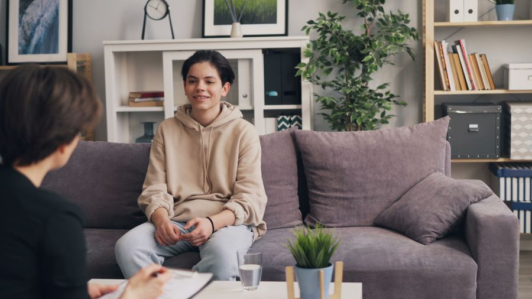

Personal guidance for women and men who want to break stuck patterns, quiet the inner noise and truly move forward. One-on-one sessions combine practical tools, NLP and habit change - in a process tailored precisely to your personality and your reality.

Every process starts with listening - and each person gets a plan of their own. These are the four main areas of guidance on the way to real change.
For couples and individuals facing challenges in their relationship, and not only in times of crisis:

Emotional Therapy for TeensEmotional support for teens, with full parental involvement:
Leading your life instead of being dragged along by it:
Focused emotional therapy for a wide range of challenges:
An emotional therapist and personal development coach, a graduate of the Tut Tikshoret school and holder of an NLP Master certificate. In recent years I've been guiding women and men of all ages - teens, young people after military service, couples and adults - through processes of real change.
From a belief that every person can live differently: with joy, with optimism and by choice - not in survival mode. That doesn't take another motivational talk, but an organized process that connects mind, emotion and action.


The clinic in Rehovot combines two worlds: an intimate, quiet therapy room, and a green, peaceful courtyard that's simply lovely to sit in. Before each session you can choose where you feel more comfortable - and that in itself is a choice that makes a difference.
For some people, a closed room closes them up too. In the courtyard the air is different: you sit at ease, drink coffee, smoke, breathe deeply - and talk without the feeling of a "clinic." Individual sessions as well as workshops and seminars take place there, along with experiential activities that need open space.
A precise combination of mind, emotion and action - all the tools in one place, for a practical process that produces results.
A personal guidance process that combines deep listening, precise direction and practical tools for coping with emotional challenges, making decisions and leading meaningful change in your personal and professional life.
Precise work on everyday habits that affect your relationship, career and personal energy. Building new routines, breaking old patterns and creating mental stability that leads to consistent progress over time.
An advanced NLP method for identifying patterns that hold you back, changing limiting beliefs and strengthening self-confidence. The process focuses on creating fast change in emotion, thought and behavior - in a practical, focused and personalized way.
Like an iceberg - what you see from the outside is only the tip. The patterns and emotions that really run us lie beneath the surface, and we reach them with two main tools:
The central tool of the NLP method: deep relaxation, music and a guided story through which you open up, release what's weighing on your mind and build a sense of confidence and control - for individuals and groups.
How it worksCards with an image and a word that open a conversation exactly where it's hard to find words - a gentle therapeutic tool that bypasses barriers and offers an opening to share what's weighing on your heart.
Why it worksSetting out into life and wanting a clear direction - career, independence and confidence
Emotional regulation, anxiety, self-confidence and social difficulties
Before the wedding or after many years - communication, closeness and romance
Feeling stuck, crises, anxiety - and anyone who wants to live differently
Personal empowerment workshops for groups and organizations - "From Crisis to Growth," the midlife crisis at 40 as a lever for change, and more. Also delivered in academic settings.
Details on the workshopsEye-level conversations about emotional regulation, relationships and personal growth. Three episodes are already out, free to listen to right here on the website.
Listen to the episodesChoose a topic and see only the questions relevant to you.
A short personal conversation where we get to know each other, you tell me what's on your mind, and you get an explanation of how the process works and what fits your situation. By the end you'll know whether this is the right path for you. No pressure and no commitment.
At the clinic in Rehovot, 51 Dubnov St. There is an intimate therapy room and also a peaceful courtyard, because not everyone feels comfortable opening up between four walls. Those who live farther away meet on Zoom, with the same depth and quality.
Yes. A full process on Zoom works well, and it's the choice of people who live far from Rehovot or find it hard to make time for travel. The tools themselves, including guided imagery, work through the screen too.
By phone at 054-3333265, on WhatsApp, or through the contact form on the website. We'll get back to you and schedule a first intro call.
It depends on the goal. There are short, focused tracks around a single topic, and there are longer, deeper processes. There's no fixed number of sessions in advance, and in the intro call we'll figure out together what suits you.
No. You move forward at your own pace and according to the goal you set, and along the way we check together what has already happened and what still makes sense to do.
Completely. What is said in a session stays in the session. When working with teens, parents receive an overview and tools to apply at home, while the teen's personal space is protected. That is exactly what allows them to open up.
No. The guidance and emotional therapy offered by Alon Shemesh are not a substitute for psychological or psychiatric treatment. Alon is not a psychologist or a psychiatrist, and some situations require diagnosis or treatment by a mental health professional. In such cases you will be referred to the appropriate professional.
Alon studied personal coaching at the Tut Tikshoret school, was certified as an NLP Master Practitioner at Yozmot College (120 hours), and is a Master-level member of the Israeli NLP Association. You can see the certificates themselves on the About page.
NLP deals with the connection between thoughts, emotions and behavior: those automatic reactions that repeat again and again and produce exactly the same results. Instead of treating only the symptom, we identify the pattern at its root, replace it with a different pattern, and translate that into habits and practical steps in your daily routine.
It's not hypnosis. Guided imagery is the central tool of the NLP method: calm music, deep relaxation of the body and breath, and a guided story built especially for you. Through it, emotions get room, and a solution can be built from them. Throughout the process you are awake, aware and fully in control, and you can stop at any moment. More about this tool.
Cards that combine an image with a word or a sentence. They are not fortune-telling cards but a therapeutic tool that sparks personal associations and bypasses rational barriers. When it's hard to find words, especially for people who are introverted or closed off, the card offers an opening to share what's weighing on your heart. More about the cards.
No. There's nothing you need to know in advance. The tools are explained as we work and adapted to each person's character, age and pace.
It varies from person to person and also depends on what happens between sessions. Some things you feel quickly, like a calming tool or taking apart a specific fear, and some deep patterns take time and persistence. In the intro call we talk about realistic expectations, not promises.
Sometimes, yes. A little practice between one session and the next is what turns an insight into a habit, so some processes include a tool to practice at home. The tasks are set together and fitted to what's truly possible in your routine.
If you feel stuck, keep going back and forth and can't decide, lack confidence, or want to move forward but can't break through what's holding you back, there's something to work on here. The simple way to find out is an intro call, and by the end of it you'll know whether it's right for you.
Personal coaching focuses on the present and the future: goals, habits and progress. Emotional therapy also touches the emotion itself, the fears and the patterns that formed in the past and are still at work today. In practice, the process here combines the two and is built around what you bring with you.
Yes, and that's how many people come. A feeling of being stuck or dissatisfied without knowing exactly what's missing is a completely legitimate starting point. Part of the work in the first stage is defining together where you want to get to. More on feeling stuck in life.
First we crack why this particular decision is stuck, which fear or belief is holding you in the middle, and only then do we work on the decision itself. You come out with clarity and the confidence to stand behind your choice, instead of deciding out of fear.
It's one of the most common topics. The inner voice that says "I'm not good enough" is a learned belief, and anything learned can be changed. The work combines changing limiting beliefs with gradual practice and accumulating successes, until you start acting from a place of self-worth.
On two levels at once: immediate tools for calming and regulation that you can use from the very first session, and alongside them, deep work on the root that generates the anxiety. It's important to say that anxiety requiring diagnosis or medical treatment is a matter for a mental health professional, and in that case you will be referred.
Stress is a reaction to something happening now: pressure at work, an event, a period. It eases when the situation eases. Anxiety shows up even without immediate danger and continues after the cause has passed. Both can be regulated, but the work on them is different.
In many cases, yes. A phobia is an automatic reaction that got burned in, and focused NLP techniques know how to take it apart, sometimes within just a few sessions. The goal is for you to stop planning your life around the fear.
Because the knowing sits in the conscious mind, and the resistance sits deeper. Patterns and beliefs formed years ago keep running your behavior behind the scenes, which is why understanding alone isn't enough. The work focuses exactly there, on what actually stops you.
Yes, and it doesn't happen with a single decision. We change the pattern that produces the habit, build a different behavior in its place and practice it until it becomes natural. It takes time and persistence, and even deeply rooted patterns can change. More on changing patterns.
That's the difference between a temporary boost and a process. A motivational talk lifts you for two days and then fades. Here the work connects three parts: identifying the pattern, making room for what you truly feel, and translating it into everyday steps and habits. Without the third part, no change holds over time.
A breakup, a career change, a loss or a feeling that you've lost your direction are among the most common reasons people reach out. At a time like this, guidance first of all provides stability, and from there we build the next chapter. More on coping with crises.
You don't need to wait for a crisis. Many couples come to improve communication, bring back closeness that has worn down, or simply prevent problems that build up quietly. The earlier you come, the shorter the way back.
Quite the opposite. Couples who come to therapy are couples who care, who chose to fight for the relationship instead of giving up on it.
Absolutely. When one partner changes, the whole dynamic changes, and quite often it's the personal process that opens the door to joint work later on.
Usually, yes. The heart of the process is the couple sessions. As needed, individual sessions for each partner are also included, to make room for what's hard to say in front of the other.
Both partners share how they see the relationship and what hurts most or feels most stuck right now. From there we define a shared goal for the process together, so everyone knows where they're heading and not only what they're running from.
Very much so. Pre-marriage guidance is one of the most meaningful processes: you deal with fears, doubts and arguments now, instead of dragging them into your shared life. More on pre-marriage guidance.
A fight that keeps repeating is almost always the same fight in disguise. We'll identify what really triggers it beneath the surface, and learn ways of communicating that let you say the hard things without causing damage along the way. More on relationships and communication.
Every case is considered on its own, and there are no promises here. In many cases it's possible to work on rebuilding trust, processing the hurt and rebuilding the relationship, as long as the distance that formed also gets room. The decision whether to stay always remains yours.
When the relationship starts making you smaller: constant criticism, jealousy, control, or a feeling that you're walking on eggshells in your own home. In sessions we identify the dynamic, restore boundaries and examine what can be fixed and what can't. More on toxic relationships.
Yes, and it's part of the relationship work, not an add-on to it. When the same script repeats in every relationship, the story lies in the pattern, not in luck. We'll identify what repeats and where it came from, and make room for a different kind of relationship.
Social difficulties, fears, a drop in confidence, angry outbursts, withdrawal or a noticeable change in behavior are signs worth paying attention to. You don't have to wait until it gets serious. An intro call with the parents helps clarify whether there's a real need here.
The guidance is adapted for teens, and the language and tools change according to age and stage of adolescence. If you're not sure it's right for your teen's age, that's exactly the question for the intro call.
At eye level, in simple language and with experiential tools, without stigma and without any feeling that something is wrong with them. Parents are full partners and receive updates and tools to apply at home, because real change happens when the whole household is aligned.
This is a very familiar resistance, and it's almost always against the label, not against the session itself. The sessions are built as conversation and experiential activity, not as an interrogation. You can also start with a conversation with the parents only and decide from there.
The session itself belongs to the teen; that's where trust is built. Parents receive an overview and practical tools to apply at home, and the extent of sharing is agreed in advance, according to age and what's right for the teen.
Yes. The work moves at the teen's own pace and with means that help them feel safe: indirect conversation and inspiration cards, which offer an opening to talk when it's hard to find words. No one is pushed to talk before they're ready.
Yes. Outbursts, slamming doors or withdrawing are a sign of difficulty with emotional regulation, and that's a skill that can be learned, not a trait you're born with. We'll teach them to recognize the emotion before it explodes and to choose a different response. More on emotional regulation.
It's one of the most common topics in working with teens. We strengthen social confidence, practice skills for making connections and keeping boundaries, and bring back the joy of friendship. More on social problems.
Yes. Teens deal with a whole load around self-confidence, friends, school and personal identity, and often they actually find it easier to talk with an adult who is neither a parent nor a teacher. The conversation with them is held with respect and without lecturing.
Three workshops: "From Crisis to Growth," about the strength hidden within hard moments; "The Midlife Crisis at 40 as a Lever for Growth"; and "Personal Empowerment," which deals with self-confidence and limiting beliefs. Details on the workshops.
For organizations and companies, team-building days, seminar days and employee wellness programs; for academic settings, as Alon also leads personal empowerment workshops at a college; and for private groups, communities and community centers.
Yes, and that's the usual way of working. We schedule a call, understand who the audience is and what the goals are, and build the content from there. To book a workshop or talk.
Absolutely. The same topic sounds different to a team of employees, to students or to a group of parents, so the content, examples and exercises are built around the audience and its challenges.
Both. Every workshop combines practical knowledge, experiential group practice and tools that stay with participants the morning after. It's not a lecture you listen to and forget.
The format is built around the setting: a short talk, an experiential workshop or a combination of the two. The number of participants and the length are agreed in advance in a call, together with the goals you've set.
The combination of personal life experience, tools from the world of NLP and eye-level conversation. Participants don't just sit and listen; they try things out themselves and leave with something they can use the very next day.
Didn't find your question here? Ask directly, we'll be happy to answer.
The first step is yours to take - everything after that we do together. A personal intro call, with no commitment.
To be clear: the guidance and emotional therapy offered by Alon Shemesh are not a substitute for psychological or psychiatric treatment. Alon is not a psychologist or a psychiatrist, and some situations require diagnosis or treatment by a mental health professional - in such cases you will be referred to the appropriate professional.
Before you go - have you heard about the December 1 seminar?
Alon will get back to you soon to confirm your place and share payment details. If it's urgent, you can also WhatsApp 054-3333265.